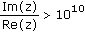

Formatting Results |
The Result Format dialog allows you to control how Mathcad displays the results of your calculations. With the dialog, you can set:
You can access the dialog either by choosing Result from the Format menu to change the display of all results in the worksheet, or by double-clicking on a result, which only affects that particular result.
Formatting changes made to a particular equation override any subsequent changes to the entire worksheet.
| Number Format tab |
Specifies the format scheme and number of decimal places.
General – Results are in exponential notation when "Exponential threshold" is exceeded.
12461.7556 = 1.246 × 104
(exponential threshold is 3)
Decimal – Results are never in exponential notation.
12461.7556 = 12461.756
If there are more than 17 digits to the left of the decimal, Mathcad displays zeros for the remaining digits, but only the first 16 digits are accurate. For example:
12345678901234567890 = 12345678901234568000
Scientific – Results are always in exponential notation.
12461.7556 = 1.246 × 104
Engineering – Results are always in exponential notation, and the exponents are multiples of three.
12461.7556 = 12.462 × 103
Fraction – Results display as fractions. You can control whether mixed numbers are used.
The default is "General."
Normally, this controls the number of digits displayed to the right of the decimal point, assuming that "Show trailing zeros" is checked. However, if N is the number of digits to the left of the decimal point, then at most 17 − N digits can be displayed to the right of the decimal point, regardless of the setting of "Number of decimal places." This option affects only the display. Calculations occur with full precision no matter how you decide to display the result.
For example, the number .126125 is displayed as follows:
Number of |
Result in |
2 |
.13 |
3 |
.126 |
4 |
.1261 |
5 |
.12613 |
6 |
.126125 |
The number of decimal places must be between 0 and 17 inclusive. The default is 3.
Controls whether trailing zeros display to the right of the decimal point to fulfill the current choice of "Number of decimal places."
For example, if "Number of decimal places" is 3, then:
1.5 |
"Show trailing zeros" is unchecked |
Displays as 1.5 |
1.5 |
"Show trailing zeros" is checked |
Displays as 1.500 |
If a result has more than 17 digits total and "Show trailing zeros" is checked, Mathcad displays 17 digits followed by zeros until there are as many digits to the right of the decimal point as specified by "Number of decimal places." The exception is when "General" format is selected as the Format scheme. If "General" is selected and "Show trailing zeros" is checked, Mathcad does not display zeros beyond 17 digits total, regardless of "Number of decimal places" specified. For example:
Number |
Format scheme |
Settings |
Result with "Show trailing zeros" |
1234567890123.45678 |
General |
Decimal places = 3 |
1234567890123.457 |
1234567890123.45 |
Decimal |
Decimal places = 4 |
1234567890123.4500 |
12 |
Scientific |
Decimal places = 3 |
1.200 x 101 |
12.345678 |
Engineering |
Decimal places = 4 |
12.3457 x 100 |
The default is "Show trailing zeros" turned off.
When "General" format is selected, controls whether you see a number displayed in exponential notation. Results of magnitude greater than 10n or smaller than 10−n, where n is the exponential threshold, are displayed in exponential notation.
Exponential |
Displayed |
| 5 | x = 1.123581 · 106 |
| 6 | x = 1.123581 · 106 |
| 7 | x = 1123581 |
| 2 | y = 0.123581 |
| 1 | y = 0.123581 |
| 0 | y = 1.235813 · 10−1 |
The exponential threshold must be between 0 and 15 inclusive. The default is 3. This means that all numbers outside the intervals [.001, 1000] and [−1000, −.001] are shown in exponential notation.
When either "Scientific" or "Engineering" format is selected as the Format and this option is checked, the result is displayed using E notation. For example:
Scientific Format:
23.4556 = 2.346 × 101
Scientific Format with exponents in E notation:
23.4556 = 2.346 E+001
The default is "Show exponents as E±000" turned off.
When "Fraction" is selected as the Format and this option is checked, the result is displayed as a mixed number. For example:
Fraction Format:
Fraction Format Using Mixed Numbers:
The default is "Use mixed numbers" turned off.
When "Fraction" is selected as the format, controls how close the fraction approximation is to the decimal value. The higher the accuracy, the closer an approximation. The default is 12.
When checked, all of the settings in the Number Format tab are applied to the results of symbolic evaluations, as well as to numeric evaluations.
| Display Options tab |
The Display Options tab has the following options:
Specifies whether an array is displayed in an output table or in matrix form.
Choose "Matrix" to see the result in matrix form.
Choose "Table" to see the array displayed in an output table.
Choose "Automatic" if you want a table or matrix depending on the size of the array. If the array has more than 10 rows or columns, you see a table. Otherwise, you see a matrix.
The default is "Automatic."
Expands nested array notation. For example:
Nested Array Notation:
Expanded:
The default is unchecked.
If a nested array is displayed as a table, you can temporarily expand an element by right-clicking on the table and choosing Down One Level from the menu.
Controls whether computed results having an imaginary part are displayed using "i" or "j."
You can continue to use either "i" or "j" when you enter an imaginary number.
You can only set this option when a particular result is not selected. Click in a blank part of your worksheet, then choose Result from the Format menu.
The default is "i."
Controls whether a number is displayed as binary, octal, hexadecimal, or decimal. The default is decimal.
Binary, Hexadecimal, and octal numbers are followed by the letter "b," "h," or "o" respectively so you can readily distinguish them from decimal numbers. (Mathcad does not reliably show hexadecimal or octal numbers of magnitude greater than 231.)
| Unit Display tab |
The Unit Display tab has the following options:
Reformats the unit display to more common notation. For example, sec-1 displays as 1/sec. This option is checked by default.
Displays the simplest unit possible. For example, kg*m/sec2 is simplified to N (newton). This option is checked by default.
Displays unit exponents as rational fractions when checked. Otherwise, they are displayed as decimals. This option can only be set for the whole worksheet, not on a region-by-region basis.
| Tolerance tab |
Controls how much larger the real or imaginary part of a number must be before display of the smaller part is suppressed.
For example, the number 1+0.002i would appear as follows when displayed with different complex threshold values:
Complex threshold |
Result |
2 |
1 |
3 |
1+.002i |
4 |
1+.002i |
Complex threshold must be an integer between 0 and 307. The default is 10. This means:
z is shown as pure real if
z is shown as pure imaginary if

Controls how close a result must be to zero before it is displayed as zero. For example, the number 0.000125 would appear as follows when displayed with different zero threshold values:
Zero Tolerance |
Displayed Result |
2 |
0 |
3 |
0 |
4 |
.000125 |
5 |
.000125 |
The zero threshold must be between 0 and 307. The default is 15. Numbers smaller than 10−15 are displayed as zero.
You can set the zero threshold only when a particular result is not selected. Click in a blank part of your worksheet, then choose Result from the Format menu.